Some of the methods provided in netrankr are
computationally very expensive. Computing all rankings of a partial
ranking, for instance, is a NP-hard problem such that using the function
exact_rank_prob() quickly becomes infeasible. This article
provides some guidelines for when the use of this function is possible.
Additionally, the quality of the approximation functions
approx_* and sampling rankings with
mcmc_rank_prob() for expected ranks and
relative rank probabilities are assessed.
(The data and code to replicate the benchmark results can be
found in the data-raw folder on github)
Runtimes exact probabilities
The below figure shows the runtime of exact_rank_prob()
for a sample of 3,000 partial rankings with 10 to 20 nodes and varying
degree of completeness.

Not surprisingly, the runtime increases quickly with the number of
nodes and the number of incomparable pairs in the partial ranking. As a
very crude rule of thumb: As long as a partial ranking has less than 30
elements, it is always save to run exact_rank_prob().
Beyond 30 elements, it is advisable to only use the function if a high
fraction of pairs of elements is already comparable. The more elements,
the higher this fraction should be.
Approximating expected ranks
netrankr implements five methods to approximate expected
ranks which are given by the functions
approx_rank_expected() and mcmc_rank_prob().
The four methods implemented in the former are only based on structural
features of the partial ranking, while the latter is based on sampling
rankings (almost) uniformly at random from the set of all rankings.
Consult the help files for a more detailed description and references.
The below figure shows the (averaged) mean absolute error compared to
the exact expected ranks of the five methods on the set of 3000 partial
rankings from above. The number of drawn samples for the mcmc function
is set to
,
where
is the number of elements in the partial ranking.

The basic local partial order model performs considerably worse than the other methods on almost all partial rankings. Its generalized version outperforms the methods based on the relative rank probabilities (loof1 and loof2) if the number of incomparable pairs is high. The mcmc method generally yields the best approximations, especially with increasing number of elements. However, its performance seems to get worse when almost none of the elements are comparable. This issue is discussed in the section on choosing the number of samples further down.
Approximating relative ranks
Relative ranks can either be approximated with the iterative function
approx_rank_relative() or again via sampling rankings
(almost) uniformly at random with mcmc_rank_prob(). The
below figure shows the (averaged) mean absolute error compared to the
exact relative rank probabilities on the set of 13000 partial rankings
from above. The number of drawn samples for the mcmc function is set to
,
where
is the number of elements in the partial ranking. The number of
iterative steps in approx_rank_relative() is set to 1 (no
iteration), 5, 10 and 15 respectively.

Clearly, the non-iterative approximation performs worse on all partial rankings. The more iterations the better the approximation quality seems to be, yet the gain in quality going from 10 to 15 iterations seems negligible. The mcmc based function again performs better except in the region of low comparability.
MCMC sampling of rankings
The results above have shown that approximating expected ranks and relative rank probabilities on the basis of a random sample generally give the best results, except in the region of low comparability. This problem can be mitigated by increasing the number of samples. The below boxplot shows the mean absolute error for the expected ranks of an empty partial ranking with 10 elements, when the number of samples is increased. For each sample size, 100 repetition were done. 
The same procedure is carried out for the relative ranks below.

That is, increasing the number of samples (quite naturally) leads to better approximations, but of course also comes with an increase in running time, especially for larger partial rankings.
Runtimes of approximation
The function mcmc_rank_prob() generally gives the best
approximations. The larger the number of samples, the better. Since the
number of samples should be at least cubic in the number of elements, it
is limited to partial rankings with a couple of hundred elements.
Although the function approx_rank_expected() and
approx_rank_relative() performed the worst in the above
tests, they are computationally the least expensive with a time
complexity of
.
Thus, they are able to at least give a rough approximation also for
partial rankings beyond 1000 elements.
Session info
## R version 4.4.1 (2024-06-14)
## Platform: x86_64-pc-linux-gnu
## Running under: Ubuntu 22.04.5 LTS
##
## Matrix products: default
## BLAS: /usr/lib/x86_64-linux-gnu/openblas-pthread/libblas.so.3
## LAPACK: /usr/lib/x86_64-linux-gnu/openblas-pthread/libopenblasp-r0.3.20.so; LAPACK version 3.10.0
##
## locale:
## [1] LC_CTYPE=C.UTF-8 LC_NUMERIC=C LC_TIME=C.UTF-8
## [4] LC_COLLATE=C.UTF-8 LC_MONETARY=C.UTF-8 LC_MESSAGES=C.UTF-8
## [7] LC_PAPER=C.UTF-8 LC_NAME=C LC_ADDRESS=C
## [10] LC_TELEPHONE=C LC_MEASUREMENT=C.UTF-8 LC_IDENTIFICATION=C
##
## time zone: UTC
## tzcode source: system (glibc)
##
## attached base packages:
## [1] stats graphics grDevices utils datasets methods base
##
## loaded via a namespace (and not attached):
## [1] digest_0.6.37 desc_1.4.3 R6_2.5.1 fastmap_1.2.0
## [5] xfun_0.47 cachem_1.1.0 knitr_1.48 htmltools_0.5.8.1
## [9] rmarkdown_2.28 lifecycle_1.0.4 cli_3.6.3 pkgdown_2.1.1
## [13] sass_0.4.9 textshaping_0.4.0 jquerylib_0.1.4 systemfonts_1.1.0
## [17] compiler_4.4.1 highr_0.11 tools_4.4.1 ragg_1.3.3
## [21] evaluate_1.0.0 bslib_0.8.0 yaml_2.3.10 jsonlite_1.8.9
## [25] rlang_1.1.4 fs_1.6.4